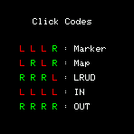
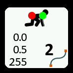

BASIC Mode Click Commands
This is a new feature introduced in v2.5.4
Whereas the BASIC mode uses long clicks to validate the main commands you can use shorter click combinations for auxiliary actions in BASIC mode:

You can add a marker with a unique ID to a station:
LEFT-LEFT-LEFT-RIGHT
You can display the live survey map:
LEFT-RIGHT-LEFT-RIGHT
You can access the LRUD entry mode:
RIGHT-RIGHT-RIGHT-LEFT
You can select the survey direction as IN:
LEFT-LEFT-LEFT-LEFT
You can select the survey direction as OUT:
RIGHT-RIGHT-RIGHT-RIGHT

20 December 2023